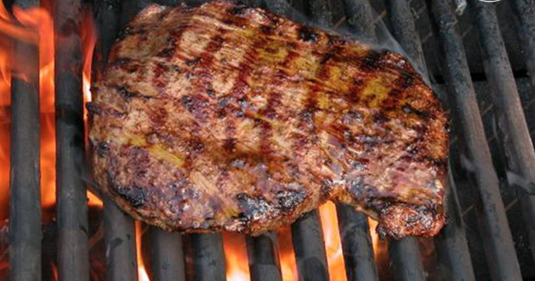

Grilled Steak


Grilled Steaks: These steaks are cooked over a hot seasoned grill from the comfort
of your own backyard!
Prepared with all the right seasonings (and your love of course),
these steaks are sure to pick you up after a busy day,
best of all they're quick to cook!
This was my dads recipe and you girls loved it everytime I cooked up steaks on the grill. Never any leftovers
(not that leftover steak is good reheated).
From our home to yours, we hope you enjoy this summertime favorite and don't forget
the salad and baked potatoes!
Serves 2!
- 2 lbs of your favorite steak. We prefer a semi-lean sirloin
- Herbs du Provence, enough to lightly dust both sides of the steak
- Adolphs Meat tenderizer, again, enough to cover both sides of the steak entirely
- Salt and pepper to dust the steaks lightly
- A fork to tenderize the meat
- Garlic butter (butter, salt, pepper, herbs du provence all to your taste.
Mix this early and set in the refrigerator to harden. Needs about 20 minutes to harden.
- About four hours prior to grilling the steaks, set the steaks out on
a baking sheet and bring to room temperature so the steaks cook evenly.
- While the steaks are coming to temperature, poke them with holes throughout
the entire steak then flip them and do the same to the other side. Lightly
and pepper the steaks on both sides, and lightly sprinkle the Adolphs meat
tenderizer and herbs du provence on the steaks, let sit.
- Preheat grill to around 600 degrees Fahrenheit.
- Once the grill is heated, place the steaks in the center of the grill and flip in 3 minutes
- Let sit on the grill for another 3-4 minutes, then check for doneness to your liking.
- Once the steaks are done, remove from grill, place two large pads of butter on them, and cover
with foil until the rest of dinner is done!
- Enjoy!